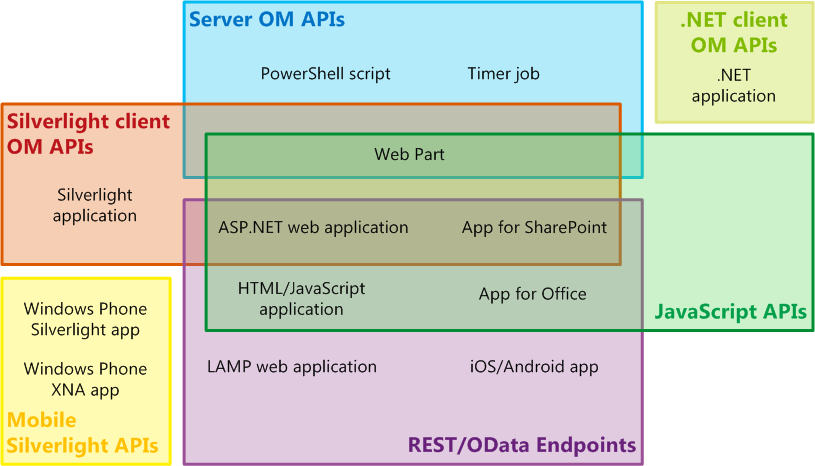
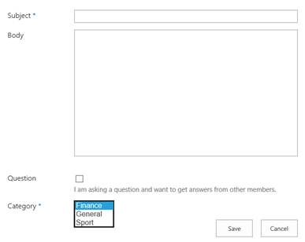

Building an MVC application for SharePoint
The Right API
Before we enter into the details of implementation of the ASP.NET MVC application that connects to SharePoint and retrieves data using the CSOM API, it is worth making a step back and understand what CSOM is and what the APIs that SharePoint makes available to programmers are.
SharePoint 2013 provides several sets of APIs, including the server object model, the various client object models, and the REST/OData web services. There are a few factors to consider for which API set to use, depending on:
- The type of application: Whether you are developing a SharePoint add-in, a Web Part on a SharePoint page, an ASP.NET application exposed in SharePoint by an iframe, a .NET application running on a client computer, a Windows PowerShell script, or a mobile app.
- The programming language of your choice: Programming SharePoint is not exclusive of .NET developers. The JavaScript Client Side Object Model opens to any HTML-based applications to connect to a SharePoint backend, and the REST/OData web services allow any other platform to communicate with a SharePoint server. It is easily possible to create applications in SharePoint 2013 without needing to learn a lot about SharePoint programming.
- The device on which the code runs: The possibilities include a server in the SharePoint farm, an external server such as a server in the cloud, a client computer, and a mobile device.
For more information about the SharePoint programming model, please refer to this article on MSDN: Choose the right API set in SharePoint 2013.

SharePoint sets of APIs, from MSDN – Choose the right API set in SharePoint 2013.
The Client Side Object Model
The SharePoint Client Side Object Model (CSOM) provides a programming interface for retrieving, updating, and managing data in SharePoint 2013. SharePoint 2013 makes the CSOM available in several forms. Specifically to .NET, almost every class in the core site and list server object model has a corresponding class in the .NET Framework client object model. This means that most of the functionalities of SharePoint Server are accessible to external applications using CSOM.
To improve performance, lines of code written against the .NET Framework client object model are sent to the SharePoint server in batches, where they are converted to server-side code and executed. The results, and the new state of all variables, are then returned to the client. We as the developer determine whether a batch runs synchronously or asynchronously. In a synchronous batch, the .NET Framework application waits for the returned results from the server before continuing; in an asynchronous batch, client-side processing continues immediately and the client user interface remains responsive.
Additionally, it is possible to use LINQ query syntax in our client code to query any IEnumerable object, including SharePoint 2013 objects that implement the IEnumerable interface. However, when doing this, we are using LINQ to Objects and not the LINQ to SharePoint provider.

Client applications and APIs in SharePoint.
The MVC Project
Let’s get started and create an ASP.NET MVC project in Visual Studio. As we are planning to use the SharePoint CSOM, we need to add a reference to the latest libraries. The assemblies for the .NET Framework client object model must be installed on the client. They are included in a redistributable package that you can obtain on the SharePoint Server 2013 Client Components SDK.
Another option is to add a NuGet reference directly into the project; we need two packages:
- Microsoft.SharePoint.Client.Latest
- Microsoft.SharePoint.Client.Runtime

Microsoft.SharePoint.Client package in NuGet.
The MVC application that we want to build connects to a SharePoint site and displays a discussion list by category. For the purpose, I am using a SharePoint site created with the Community template, so I have the following lists already available:
- Categories
- Discussion List

Site Contents for a Community site in SharePoint 2013.
A Category is identified by the following properties, which match to the equivalent model in the MVC application:
- Id
- Name
- Description
public class Category
{
public int Id { get; set; }
public string Name { get; set; }
public string Description { get; set; }
}
publicclass Category { publicint Id { get; set; } publicstring Name { get; set; } publicstring Description { get; set; } }
The Category model.
When creating a discussion, we are presented with the following form:

Adding a new item to the Discussion List in SharePoint.
So our model reflects this structure:
public class Discussion
{
public string Subject { get; set; }
public string Body { get; set; }
[DisplayName("Question")]
public bool IsQuestion { get; set; }
public Category Category { get; set; }
}
publicclass Discussion { publicstring Subject { get; set; } publicstring Body { get; set; } [DisplayName("Question")] publicbool IsQuestion { get; set; } public Category Category { get; set; } }
The Discussion model.
Now we need a controller with two actions:
- Index: Retrieves the list of categories ordered by name.
- Discussion: Retrieves the list of discussions available for a specific category.
For each of these actions, there is a view that displays the information obtained from SharePoint. More about the views later in this article.
Our controller, which for simplicity of design I call DefaultController, is implemented as follows:
public class DefaultController : Controller
{
// GET: Default
public ActionResult Index()
{
using (var sp = new SharePointContext())
{
var categories = sp.Categories.OrderBy(c => c.Name);
return View(categories);
}
}
// GET: /discussion/{category}
[Route("discussion/{category}")]
public ActionResult Discussion(string category)
{
using (var sp = new SharePointContext())
{
var discussionList = sp.DiscussionList.Where(d => d.Category.Name == category);
return View(discussionList);
}
}
}
publicclass DefaultController : Controller { // GET: Defaultpublic ActionResult Index() { using (var sp = new SharePointContext()) { var categories = sp.Categories.OrderBy(c => c.Name); return View(categories); } } // GET: /discussion/{category} [Route("discussion/{category}")] public ActionResult Discussion(string category) { using (var sp = new SharePointContext()) { var discussionList = sp.DiscussionList.Where(d => d.Category.Name == category); return View(discussionList); } } }
The Default controller.
A few things worth noticing here:
- The default action Index uses a disposable SharePoint context for obtaining a list of available categories, sorts them by name and then passes this collection to the view.
- The Discussion action has a custom route that responds to the URL /discussion/{category}, where {category} is the name of the category. When enabling attribute routing, which is available in MVC 5, it is necessary to activate these custom routes by calling the MapMvcAttributeRoutes method on the route collection in the RegisterRoutes method of the RouteConfig class.
- From the SharePoint context, the actions retrieves a list of discussions in the given category, and passes this list to the view.
public class RouteConfig
{
public static void RegisterRoutes(RouteCollection routes)
{
routes.IgnoreRoute("{resource}.axd/{*pathInfo}");
routes.MapMvcAttributeRoutes();
routes.MapRoute(...);
publicclass RouteConfig { publicstaticvoid RegisterRoutes(RouteCollection routes) { routes.IgnoreRoute("{resource}.axd/{*pathInfo}"); routes.MapMvcAttributeRoutes(); routes.MapRoute(...);
The result that we want to obtain is similar to what in the screenshot below, a list of categories, and by clicking on their name, display all discussions for that category.

List of categories in the MVC applications, directly from SharePoint.
That makes the Index view really straightforward:
@model IEnumerable<SharePointMvc.Models.Category>
<h2>Categories</h2>
<ul>
@foreach (var category in Model)
{
<li>
@Html.ActionLink(category.Name, "Discussion", routeValues: new { category = category.Name })<br />
<p>@category.Description</p>
</li>
}
</ul>
@model IEnumerable<SharePointMvc.Models.Category> <h2>Categories</h2><ul> @foreach (var category in Model) { <li> @Html.ActionLink(category.Name, "Discussion", routeValues: new { category = category.Name })<br/><p>@category.Description</p></li> } </ul>
The Index view.
The model for this view is declared as an enumerable of Category, and for each category in this collection, the view creates an action link to the Discussion action in the Default controller, passing the category name as route value.
Similarly, the Discussion view is as follows:
@model IEnumerable<SharePointMvc.Models.Discussion>
<h2>Discussion</h2>
<table class="table">
<tr>
<th>
@Html.DisplayNameFor(model => model.Subject)
</th>
<th>
@Html.DisplayNameFor(model => model.Body)
</th>
<th>
@Html.DisplayNameFor(model => model.IsQuestion)
</th>
</tr>
@foreach (var item in Model) {
<tr>
<td>
@Html.DisplayFor(modelItem => item.Subject)
</td>
<td>
@Html.Raw(item.Body)
</td>
<td>
@Html.DisplayFor(modelItem => item.IsQuestion)
</td>
</tr>
}
</table>
@model IEnumerable<SharePointMvc.Models.Discussion> <h2>Discussion</h2><tableclass="table"> <tr> <th> @Html.DisplayNameFor(model => model.Subject) </th><th> @Html.DisplayNameFor(model => model.Body) </th><th> @Html.DisplayNameFor(model => model.IsQuestion) </th></tr> @foreach (var item in Model) { <tr> <td> @Html.DisplayFor(modelItem => item.Subject) </td><td> @Html.Raw(item.Body) </td><td> @Html.DisplayFor(modelItem => item.IsQuestion) </td></tr> } </table>
The Discussion view.
The SharePoint Context
If you noticed the pattern used in the previous actions to obtain data from SharePoint, it is very similar to what Entity Framework exposes: A data context where collections of entities are defined, and the possibility to access these collections with LINQ.
In a similar way, our implementation of the SharePoint context follows the same pattern, by exposing collections of the models that we have defined in our MVC application. Because in this case we are only reading information from SharePoint, and not writing back (although technically possible), an enumerable would suffice.
public class SharePointContext : IDisposable
{
public IEnumerable<Category> Categories => LoadCategories();
public IEnumerable<Discussion> DiscussionList => LoadDiscussionList();
publicclass SharePointContext : IDisposable { public IEnumerable<Category> Categories => LoadCategories(); public IEnumerable<Discussion> DiscussionList => LoadDiscussionList();
Collection of models in the SharePoint context.
First of all, the SharePointContext class implements the IDisposable interface, so we can release the inner client context properly (more in a moment). Then, as anticipated, Categories and DiscussionList are read-only properties that expose an enumerable collection of the Category and Discussion models, respectively. Real time retrieval of data from SharePoint is implemented in two private methods.
The inner context is an instance of the ClientContext class defined in the SharePoint CSOM library. The ClientContext class extends ClientRuntimeContext, which is disposable, hence the need for disposing SharePointContext as well. All the ClientContext needs is the URL of the SharePoint site to which the MVC application is connecting; conveniently, this URL is stored in the Web.config and accessible via a static variable inside the SharePointContext class.
private ClientContext _context = new ClientContext(__sharepointUrl); private static string __sharepointUrl => ConfigurationManager.AppSettings["SharePointUrl"];
private ClientContext _context = new ClientContext(__sharepointUrl); privatestaticstring __sharepointUrl => ConfigurationManager.AppSettings["SharePointUrl"];
Declaration of the ClientContext in the SharePointContext class.
Disposing the client context follows the implementation of the Disposable pattern:
private bool disposedValue = false; // To detect redundant calls
protected virtual void Dispose(bool disposing)
{
if (!disposedValue)
{
if (disposing)
{
_context.Dispose();
}
disposedValue = true;
}
}
public void Dispose()
{
Dispose(true);
}
privatebool disposedValue = false; // To detect redundant callsprotectedvirtualvoid Dispose(bool disposing) { if (!disposedValue) { if (disposing) { _context.Dispose(); } disposedValue = true; } } publicvoid Dispose() { Dispose(true); }
Implementation of the Disposable pattern for disposing of the SharePoint client context.
After building all this infrastructure around the SharePoint context, it is time to get to the juice of it. :-) We have two tasks to accomplish:
- Retrieve a list of categories defined in SharePoint.
- For a given category, retrieve a list of discussions.
The first task is implemented in the LoadCategories method:
private IEnumerable<Category> LoadCategories()
{
Web web = _context.Web;
_context.Load(web.Lists);
_context.ExecuteQuery();
List categoryList = web.Lists.GetByTitle("Categories");
if (categoryList == null)
{
yield break;
}
CamlQuery query = CamlQuery.CreateAllItemsQuery();
ListItemCollection categories = categoryList.GetItems(query);
_context.Load(categories);
_context.ExecuteQuery();
foreach (var category in categories)
{
yield return new Category
{
Id = category.Id,
Name = category["Title"].ToString(),
Description = category["CategoryDescription"].ToString()
};
}
}
private IEnumerable<Category> LoadCategories() { Web web = _context.Web; _context.Load(web.Lists); _context.ExecuteQuery(); List categoryList = web.Lists.GetByTitle("Categories"); if (categoryList == null) { yield break; } CamlQuery query = CamlQuery.CreateAllItemsQuery(); ListItemCollection categories = categoryList.GetItems(query); _context.Load(categories); _context.ExecuteQuery(); foreach (var category in categories) { yield returnnew Category { Id = category.Id, Name = category["Title"].ToString(), Description = category["CategoryDescription"].ToString() }; } }
The LoadCategories method in the SharePointContext class.
The source code of LoadCategories is relatively simple to follow, even without a solid understating of how SharePoint works.
- First of all, we obtain a reference to the current site (Web) in the SharePoint context.
- The SharePoint CSOM data pattern always expects to load the desired object before accessing it; this is done by specifying the object to load in the Load method, and then actually executing a query to retrieve it, via the ExecuteQuery method on the SharePoint context instance.
- We need to retrieve the “Categories” list, so we first load all available lists in the specified site, and then we get the specific list by title.
- Once we have access to the Categories list, we need to read its list items; this is done by executing a CAML (Collaborative Application Markup Language) query. As we want to retrieve all existing categories, we can simply create a query that retrieves all items from the list.
- The list items are not available yet, we need to actually execute the query, and this is done, again, via the combination of Load and ExecuteQuery.
- Once obtained the list of categories, we can loop through them and read the necessary fields (Id, Title and Description) to create an instance of our MVC model Category for each list item.
In a very similar way, the implementation of LoadDiscussionList follows the same steps seen before for the categories, with the obvious difference that we now want to retrieve items from the “Discussions List” list:
private IEnumerable<Discussion> LoadDiscussionList()
{
Web web = _context.Web;
_context.Load(web.Lists);
_context.ExecuteQuery();
List discussionList = web.Lists.GetByTitle("Discussions List");
if (discussionList == null)
{
yield break;
}
CamlQuery query = CamlQuery.CreateAllItemsQuery();
ListItemCollection discussions = discussionList.GetItems(query);
_context.Load(discussions);
_context.ExecuteQuery();
foreach (var discussion in discussions)
{
var category = discussion["CategoriesLookup"] as FieldLookupValue;
yield return new Discussion
{
Subject = discussion["Title"].ToString(),
Body = discussion["Body"].ToString(),
IsQuestion = (bool)discussion["IsQuestion"],
Category = new Category { Id = category.LookupId, Name = category.LookupValue }
};
}
}
private IEnumerable<Discussion> LoadDiscussionList() { Web web = _context.Web; _context.Load(web.Lists); _context.ExecuteQuery(); List discussionList = web.Lists.GetByTitle("Discussions List"); if (discussionList == null) { yield break; } CamlQuery query = CamlQuery.CreateAllItemsQuery(); ListItemCollection discussions = discussionList.GetItems(query); _context.Load(discussions); _context.ExecuteQuery(); foreach (var discussion in discussions) { var category = discussion["CategoriesLookup"] as FieldLookupValue; yield returnnew Discussion { Subject = discussion["Title"].ToString(), Body = discussion["Body"].ToString(), IsQuestion = (bool)discussion["IsQuestion"], Category = new Category { Id = category.LookupId, Name = category.LookupValue } }; } }
The LoadDiscussionList method in the SharePointContext class.
There is a lot of repeated code here, so a good refactoring is much expected, for example for loading the current site and a specific list. The notable difference, though, is in the loop through the list items. Besides the obvious difference in the field names, it is worth noticing that the reference to a Category in a SharePoint list is made via a FieldLookupValue field. This object exposes two properties, the LookupId and the LookupValue, which can be used to create an instance of our Category model in the MVC application.